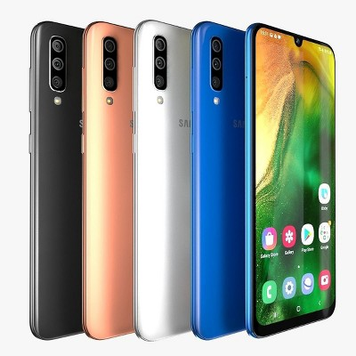

Сделайте ваши лучшие снимки простым нажатием на кнопку. Смартфон Samsung Galaxy A50 с тройной основной камерой превратит любой кадр в шедевр! И это не единственное его достоинство.


СНИМАЙТЕ, КАК ПРОФИ Основная камера этой модели тройная. Камера разрешением 25 Мп поможет сделать чёткие и детальные фото даже при низком освещении, широкоугольная камера 8 Мп расширит границы мира, а камера глубины 5 Мп сделает снимки более живыми и естественными. Автоматические настройки для разных сцен обеспечат идеальный баланс белого, яркость и контрастность. А специальная программа даже сообщит вам, если на фото кто-то моргнул или двинулся, чтобы вы могли тут же переснять неудачный кадр! МИР НА ЛАДОНИ Вы не упустите ни одной детали в любимом фильме или видеоролике! Большой дисплей диагональю 6,4 дюйма имеет очень узкие рамки. Ничто не будет отвлекать вас от просмотра! НАДЁЖНАЯ ЗАЩИТА Функция распознавания лица и экранный сканер отпечатков пальцев. Кто сможет получить доступ к вашим данным? Кроме вас — никто. СТИЛЬНЫЙ ДИЗАЙН Элегантные очертания корпуса, и ничего лишнего — даже сенсор отпечатков не портит лаконичных линий смартфона. Классические цвета и задняя панель из стеклопластика делают телефон очень элегантным.
Смартфон Samsung SM-A505FN-DS 64GB Blue с тонким, но в то же время прочным корпусом синего цвета удобно ложится в руку, а задняя 3D-панель из стеклопластика создает плавные очертания устройства со всех сторон. Безрамочный 6,4-дюймовый экран Super AMOLED с разрешением 2340×1080 пикселей покрывает телефон от края до края, обеспечивая максимальное погружение в фильмы и игры.
Смартфон Samsung SM-A505FN-DS 64GB Blue оснащен тройной камерой 25+8+5 Мп с широким углом обзора, с помощью которой можно запечатлеть каждый миг жизни. Снимки получаются яркими и четкими даже при плохом освещении.
Фронтальный модуль с разрешением 25 Мп будет идеален для селфи и позволит проводить видеоконференции с максимально качественной картинкой.
А благодаря оптимизации изображений и применению разнообразных функций для устранения дефектов сделать идеальное фото удастся с первого раза.
В смартфоне Samsung SM-A505FN-DS 64GB Blue установлен восьмиядерный процессор Exynos 9619 с частотой 4×2.3 + 4×1.7 ГГц, обеспечивающий быструю работу гаджета.
Встроенная память объемом 64 ГБ позволяет скачивать фильмы и игры больших размеров, не освобождая перед этим место.
Также в смартфон можно вставлять карты памяти размером до 512 ГБ.
Гаджет оснащен мощным аккумулятором емкостью 4000 мА*ч и функцией быстрой подзарядки, позволяющей всегда оставаться на связи.
Galaxy A50 Смартфон SAMSUNG
Galaxy A50 Безрамочный экран для безграничного мира Станьте ближе к тому, что важно для вас, c 6,4-дюймовом Infinity-U экраном Galaxy A50.
Практически безрамочный дисплей покрывает телефон от края до края. А благодаря разрешению FHD+ и цветопередаче sAMOLED вы можете с головой окунуться в свои любимые видеоблоги и прямые трансляции.
Смартфон SAMSUNG Galaxy A50 Премиальный дизайн в удивительных цветах Galaxy A50 — это чистейшая премиальная эстетика.
Тонкий корпус, выполненный в актуальном белом или черном цветах либо сияющем синем, удобно лежит в руке.
А задняя 3D-панель из стеклопластика и экранный сканер отпечатков создают плавные очертания корпуса со всех сторон.
Смартфон SAMSUNG Galaxy A50 Три камеры, чтобы запечатлеть ваши памятные моменты Galaxy A50 оснащен ультраширокоугольной камерой с углом обзора 123 градуса — таким же, как у человеческого глаза, и 25-мегапиксельной камерой (F1.7) для ярких и четких фотографий в любое время дня.
А также в нем доступна 5-мегапиксельная камера глубины для регулировки глубины резкости.
Смартфон SAMSUNG Galaxy A50 Три способа съемки Три камеры, чтобы запечатлеть жизнь во всей ее динамике.
Захватите в кадре больше окружающей реальности при любой освещенности.
Дневные снимки остаются невероятно четкими, а ночные снимки получают больше света, снижая уровень шума и повышая четкость изображения.
Добавляя размытие фона, можно сделать фотографию более художественной и выразительной.
Смартфон SAMSUNG Galaxy A50 Оптимизация изображения для снимков, которыми не стыдно поделиться Идеальное фото с первого кадра.
Будь то съемка еды, вашего питомца или любимых вещей, эта функция распознает объект и улучшает его с помощью искусственного интеллекта.
Оптимизируются значения насыщенности, баланса белого и яркости, чтобы запечатлеть реальность во всем ее великолепии.
Смартфон SAMSUNG Galaxy A50 Обнаружение дефектов для безупречных снимков Функция «Обнаружение дефектов» распознает моргания, размытие и засвет, предоставляя шанс исправить положение.
Таким образом, вы сделаете нужный снимок в нужный момент.
Смартфон SAMSUNG Galaxy A50 Подчеркните вашу индивидуальность Теперь у вас есть еще больше способов выразить себя.
Создайте и настройте селфимоджи, а потом отправьте их друзьям, чтобы поделиться своим настроением.
И украсьте свои фотографии стикерами с селфимоджи, фильтрами и штампами — пусть они расскажут все без лишних слов.
Смартфон SAMSUNG Galaxy A50 Доступ к контенту телефона по отпечатку пальца Galaxy A50 оснащен высокотехнологичной биометрической аутентификацией.
Экранный сканер отпечатков распознает ваш уникальный отпечаток пальца. Хотите знать, кто сможет разблокировать ваш телефон одним простым движением? Только вы, и больше никто. Смартфон SAMSUNG Galaxy A50 Аккумулятор, на который можно положиться В динамичном ритме современной жизни вам нужен телефон, который не подведет.
Благодаря типичной емкости 4000 мА·ч аккумулятор обеспечит вам заряд на целый день, позволяя транслировать и показывать контент, а также играть.
А если вы слегка не рассчитали нагрузку, просто воспользуйтесь быстрой зарядкой Galaxy A50 мощностью 15 Вт.
«Все права защищены ©»